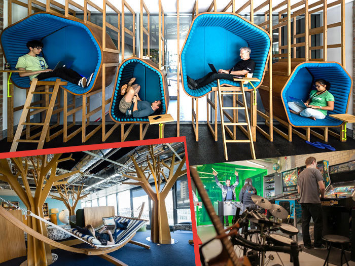

Technology and You
1) Why did you choose cultivating coders?
2) What sparked your interest in the it field
3) What are your plans after cultivating
Anthony Romero
1) I joined the program so I can further my knowledge on coding since I've never had the means or resources.
2) The main thing that sparked my interest in this field is the fact that over 800 million jobs are gonna be taken over by robots by 2030. So there has to be someone on the other side of the robot controlling it.
3) After I finish, I would like to put the knowledge that I gained from the program in an internship somewhere along the lines of application or website design.

Gus P
1) I'm in cultivating coders to acquire basic knowledge around coding so that I may impact larger digital systems that I interface with in my professional and personal life.
2) My interest in IT peaked when, in college, I realized that I would need to code to do any high level analysis regarding the issues that I care about. Our world is so complex, we have to be able to look at things as large, interacting systems, with many variables and functions. The efficient and compelling way to study issues in that way is through code. How do we visualize complex chemical interactions in medicine? Coding. How do we see an accessible picture of your brain from an MRI? Coding. How do you leverage big data to solve real world problems? Coding Almost every STEM discipline, at its most functional level, requires knowledge of coding. Realizing its ubiquity and utility sparked my interest.
3) After Cultivating Coders, I would love to use my understanding of code syntax and semantics to branch out to other languages- like R or Python. I'd love to work on data visualization, doing work like Descartes Labs, or working on UX for Public Open Data to reduce barriers toward civic engagement (how do we make city's and governments more of a sandbox?), or become competent enough in any field that allows me to even peripherally contribute to places like the S
Miriam Swisher
1) I am taking Cultivating Coders becuase it is a chance to continue to learn in a field that is growing and becoming a part of most job fields.
2) My interest in technology sparked while working in my most recent job where I was faced with challenges becuase I didn't have the skills to understand the progrmas that I was working with.
3) My plans after CC are to continue applying my skills in my current job and learn new skills that will take me to the next level in coding.
Nestor Escamilla
1) I am here to establish a career in this growing industry. I want to extend myself to all of the Albuquerque communities, nonprofits
2) I have helped people in the past build sites out of templates but now want to take it a step further and really personalize these with future clients.
3) I'd like to work with artists in Abq to have VR art shows and interactive AR scavenger hunts in town. Basically have fun and push how ABQ becomes involved in their communities.
Joseph
1)I would like to learn a new trade; it's never too late to start learning, after all. And there's so much to learn about just this one topic!
2) This probably relates to the first one, but it's how mutli-faceted technology can be; it really makes you think when there are things by which you don't comprehend right away.
3) The most I can say is that I would like to become employed after the boot-camp. In what field? I'm not sure. But I do know that that's the end goal, and to take opportunity from there on out.
Javi
1) I love to try something new. I want to learn more about how to code in other languages, because I want to be a young Developer.
2) The technology aspect that I'm interested in is more of the field in cyber security.
3) My plans after I finish this Coding boot camp is getting job opportunity that will let me travel around the world. To look on what ways they deal with cyber security.
Shaun Sutton
1) I came to cultivating coders to expand my knowlegde of various codebases as well as learn how to work these codebases in a group
Enrique
1) I'm always wanting to be better at any skill if I'm able to advance, i found cultivating coders to be my next step for my technology skillset. after i finish the class i hope to gain more skills and knowledge to get a fun job that pays me well.
2) my interests in IT came from when i wanted to be a photographer and video editor. to upgrade my skills i found a liking to learning how to code and using certain software to enhance the photos/videos
3) i chose the IT field because it will become more popular and more intertwined in our future. I also know that if i were to get into the IT field I'm able to make enough money to sustain myself and my future children. i also think i would become a great help for others if i chose this path.

Campbell Row
1) I am attending cultivating coders because I want to learn about development within fullstack. I am interesting in learning languages I am not currently familiar with. I also want to test my aptitude for developing in a group atmosphere.
2) Since I was a kid, I've been fascinated in technology. For some reason I've always been drawn to computers. I like the idea that you can be in complete control of your environment and what is in your environment when working behind a screen.
3) After I finish the cultivating coders program I plan on continuing to learn more about web development. I would like to get employed in this field, that would be the goal.
Coleon
1) Honestly I need something to pursue, wanting to better myself and learn new things and was always interested in coding just never knew how about learning it.
2) I myself am fascinated with the design aspect of IT work. being able to customize how things look, act , function is interesting for me.
(3) My goal is to find a job or career in the IT field, If it's back end or front end my goal is to be able to work in that either making things function or create design for video games.
Zachary Herrera
1) Why cultivating? I went with Cultivating Coders because the program was much more appealing than other intimidating programs such as CNM Ingenuity. The Cultivating coders program not only works around my daily work schedule, but is also a comfortable and diverse learning environment.
2) What piqued my interest in the IT field was the Youthbuild Leadership IT program. More specifically Michael Parra, the IT liaison for Youthbuild. He explained the various opportunities that can be found in the IT field. He helped me get my life together and noticed my interest in videogames & mobile apps. Now I have the opportunity to learn the specifics of how my passion works.
3) After cultivating coders I would like to do another internship but this time I'd like to go through Charles' sources. Further my education through firsthand work with technology and coding and eventually get a degree in Computer Science.
JD Robinson
1) I am attending CC to enhance my skillset and because I love to learn.
2) My interest in the IT field comes from interest in computing. I would like to hack my mind to be half man half machine.
3) After CC I will continue to enhance my skillsets, and begin to apply for a new position that challenge my skillsets.
Chandler
1) I'm attending the cultivating coder's camp because I will be challenging myself for what I once said I'm not smart enough for, or that I simply can't learn. I'm ready to fight for my right to make it in the IT, web-development, coding industry.
2) for me, technology is a way to adapt and survive in an evolving world surrounded by the next best thing around the corner every day. I struggled to pass basic classes in school until someone asked if using a computer would be easier and i decided to give it a try. Ever since that day I've done everything related to school or learning on a computer and I'm truly thankful, I wouldn't be where I am today without technology
3) my plans after this camp are to continually learn as much as I can about web development before moving on to potential game design. or at least learn the steps it takes to be apart of a game development studio. I'm not satisfied with the gaming industry and I'm aggressively pushing towards a way to reshape it into what I believe it should be.
Danny Boy
1) Why I'm attending cultivating coders is because I thought it would be amazing to learn the know's and the how's with a variety of coding languages. Most of all, it would help build my dream to become a mechatronic engineer and become apart of the space industry. Also, it'd be neat to make some minigames based from my stories.
2) The technology that sparked this desire was when little me watched some videos on robotics and space development, and I became an addict.
3) My plans for after this is to not stop learning. I'd probably take some online classes or take on some of my own personal projects.